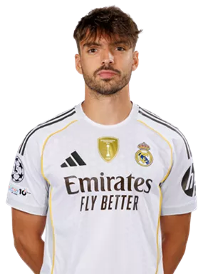
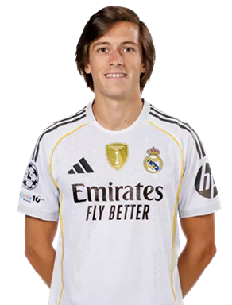
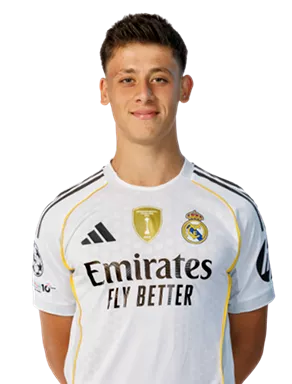

Real Madrid vs Celta Vigo: A Crushing Defeat

The recent match between Real Madrid and Celta Vigo was a tough one for Los Blancos. Here is a summary of what happened in the match played on Sunday, December 7, 2025: The Result: Real Madrid 0 - 2 Celta Vigo It was a shocking upset at the Santiago Bernabéu, marking Real Madrid's first home defeat of the season.
⚽️Scoresheet
- Celta Vigo’s Williot Swedberg was the nightmare for Madrid's defense, scoring a brace (two goals). He opened the scoring in the 54th minute with a clever finish and sealed the game in stoppage time (90+').
- Goals: Celta Vigo’s Williot Swedberg was the nightmare for Madrid's defense, scoring a brace (two goals). He opened the scoring in the 54th minute with a clever finish and sealed the game in stoppage time (90+').
🔴Red Cards
- Fran García was sent off in the 64th minute after receiving two yellow cards in quick succession.
- Álvaro Carreras was shown a red card in stoppage time.
- Endrick was also shown a red card while on the bench for complaining to the officials.
🔑Key Takeaways & Context
- Manager Under Pressure: The current manager, Xabi Alonso (who replaced Ancelotti), is facing scrutiny. He admitted post-match that the refereeing was frustrating but acknowledged the team needs to improve.
- League Standings: This loss was damaging for the title race, leaving Real Madrid trailing league leaders Barcelona by four points.
- Injuries: To make matters worse, Éder Militão had to leave the game in the first half with a hamstring injury, adding to an already difficult injury crisis for the squad.
- It was a frustrating night where everything that could go wrong, did go wrong—from injuries and red cards to a lack of finishing upfront despite chances for Vinícius Jr. and Mbappé.
Real Madrid vs Manchester City

This is arguably the most crucial match of the season so far for Real Madrid, as they face Manchester City in the UEFA Champions League at the Santiago Bernabéu tomorrow, Wednesday, December 10, 2025 (2:00 PM CST). The context of this fixture—the greatest modern rivalry in European football—is compounded by the current crisis at Real Madrid.
🔥 High-Stakes Showdown
- Manager Under Fire: Following the loss to Celta Vigo, manager Xabi Alonso is under immense pressure. Reports suggest his job security is tied to the result of this Champions League match. Alonso stated the team is "united" and "convinced" they can win, but the atmosphere is tense.
- Injury Crisis: Madrid is facing a devastating injury list, particularly in defense. Key players like Éder Militão (hamstring), Dani Carvajal, Ferland Mendy, David Alaba, and Eduardo Camavinga are out. This forces a makeshift defense to face the potent attack of Erling Haaland and Phil Foden.
- Mbappé Doubt: The biggest question mark is over Kylian Mbappé, who missed training on Tuesday with a muscle injury. His potential absence would be a catastrophic blow, as he has been Madrid's top scorer this season.
⚔️ The Tactical Battle
- Real Madrid's Strategy: Expect Madrid to lean heavily on verticality and rapid counter-attacks, using the pace of Vinícius Júnior to exploit the space behind City's high line. The onus will be on Jude Bellingham to dominate the central areas and link the midfield to the attack.
- Manchester City's Strategy: City will aim for their usual control, precision, and high possession. However, they have been defensively inconsistent in Europe recently. The key tactical element will be how Pep Guardiola uses his full-backs (like Matheus Nunes) to either step into midfield or provide width against Madrid's vulnerable channels.
🔵 Manchester City's Form
City comes into the match confident, despite a recent Champions League loss to Bayer Leverkusen (where they rotated heavily).
- Domestic Form: City is flying high in the Premier League after a string of high-scoring victories.
- Key Players: Erling Haaland remains the primary threat, with Phil Foden and Julián Álvarez providing ample support.
- City Injuries: City is without their midfield lynchpins Rodri and Mateo Kovacic due to injury, which could slightly temper their midfield dominance.
Most Recent Starting XI
Goalkeeper: Thibaut Courtious

Right-Back: Federico Valverde

Center-Back: Antonio Rudiger

Center-Back: Raul Ascensio
Left-Back: Alvaro Carreras
Center Defensive Midfielder: Aurelian Tchouameni

Center Midfielder: Jude Bellingham

Center Attacking Midfielder: Arda Guler
Right Winger: Franco Mastantuono

Striker: Kylian Mbappe

Left-Winger: Vinicius Junior